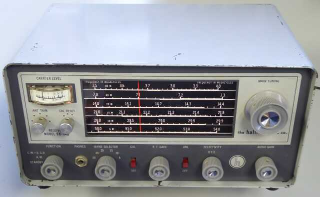
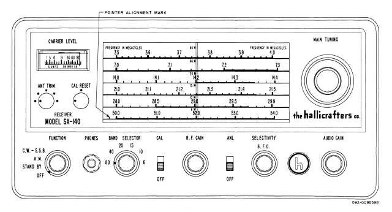
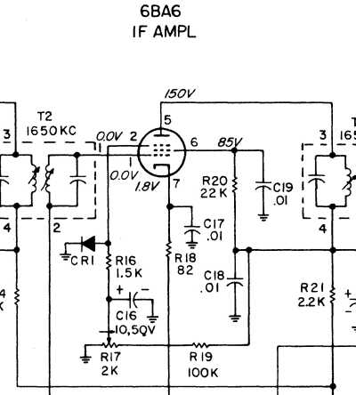
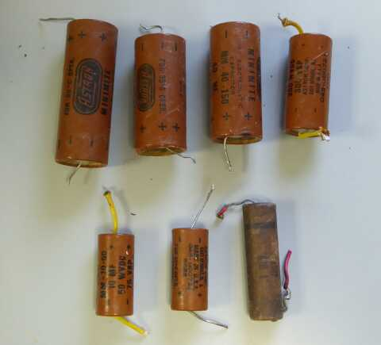
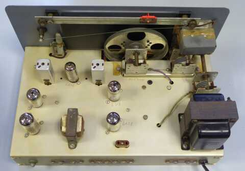
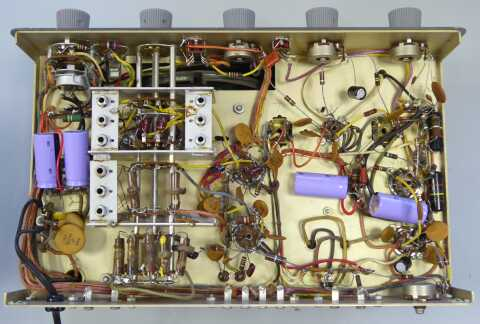

 |
３．５～５０Ｍｈｚ帯をカバーするアマチュア無線専用受信機です
この後、ケースを再塗装…現在はブラックです！ |

|
１９６１年の発売 東京オリンピックの３年前です（昭和３６年）
ＴＲＩＯ(現ＪＶＣケンウッド）より発売された、かの高名な？９Ｒ-５９の登場は１９６０年、こちらもプロダクト検波は採用されておりません
６０年代前半は、まだまだＳＳＢは特殊というか、ほとんどのハムは手にすることの無かった電波形式でした（私の体験では、ＳＳＢの普及は１６６８年くらいから）
さて本機ですが、わずか５球で構成された、高一中一のシングルスーパー方式を採用した受信機です
ＩＦが１６５０ＫＨｚという、ハリクラフターズお得意の周波数構成が採用されています
この時代には、よく見られた方式です
高級機では、ＩＦ：１６５０ＫＨｚから、もう一段４５５KHｚとか５０KHｚ台に落として選択度を稼ぐ、国産ならＳＲ－７００などが、この方式を模したものです
一方では、ＢＣラジオを親受信機にして、短波を聞く・・・ＤＥＬＩＣＡ プラグ・イン・コンバータでも、１５００ＫＨｚに出力する方式が採用されていました
さて、本題に戻って、ノービス・クラスには、ＨＦのＰｈｏｎｅ（ＳＳＢ）の許可はなく、ＳＳＢ受信は補助的であったと思われます
本機の特徴になると思いますが、ＩＦ増幅管のサプレッサ・グリッドを浮かして発振させることでＢＦＯの代わりをさせています
言わば再生方式を採用、です
この再生状態の変化により、帯域幅の調整・・・マニュアルによると８ＫＨｚから２ＫＨｚの間で可変が出来るとあります
確かに選択度の変化は認められますが、利得の変化も大きく使い勝手が良いかどうかは微妙です
ＣＷ／ＳＳＢ受信時には、ほぼ時計方向に回しきった位置で、多少ＢＦＯ周波数の変化が可能です
実際の受信に於いては、信号が強いとビートがかからず、ＡＦゲインを高く固定して、ＲＦゲインを絞ってちゃんと復調するよう調整する、こんな操作になります
それなりな音質で受信することが出来ます
帯域幅が広いため、例えば７ＭＨｚ帯などに於いては、混信が多いというか、ＳＳＢで言えば、復調できない信号が同時に聞こえるというような感じになります
最後は自分の耳で選択して聞く・・・原始的？な受信方式ではありますが、必要かつ十分な感度が得られていることには正直驚きます(下段表参照） |
 |
こちらが特徴的なＢＦＯ回路です
ＡＭ受信時には、帯域幅の調整が出来るとあります（８～２ＫＨｚ）
再生受信に近い感じで、発振手前が一番感度も上がり、選択度も向上します
ＢＦＯは、この発振状態を利用、です
この回路が、実際どんなものか使ってみたいという興味が、この受信機を手に入れた理由のひとつです
ＣＷ／ＳＳＢ受信時には、ＡＧＣはＯＦＦとなり、Ｔ２ ＩＦＴ の②は、４７ＫΩの固定抵抗で接地されるようになっています
ＣＲ１は、シリコンダイオードで、Ｒ１７で電圧を上げていけば、あるところから電流が流れ、導通することになります
ここでＢＦＯとして動作することになります
強い信号に対してはビートがかからないため、実際の受信に於いては、ＡＦゲインを（ほぼ）一杯上げて、ＲＦゲインを調整して受信するという形を取ります
当然Ｓメーターは、役に立ちません！
|
|
|
同調調整は、ＡＮＴ－ＴＲＩＭだけ、回路も運用も極めてシンプルに考えられています
ＲＦ／６ＡＺ８＝＝ＯＳＣ・ＭＩＸ／６Ｕ８Ａ＝＝ＩＦ／６ＢＡ６＝＝ＡＶＣ・ＤＥＴ・１ｓｔＡＦ／６Ｔ８Ａ＝＝メーターＡｍｐ・ＡＦ／６ＡＷ８Ａ 以上の、わずか５球の構成です（１／２ ６ＡＺ８は、キャリブレータ発振用）
それでいて必要な感度などきちんと得られる・・・人間の耳をアテにはしていますが(当然ですが！）、ある意味非常に良くできた受信機と思われます
２１ＭＨｚ帯以上のバンドは、局発の２倍高調波を利用してあり、ＣＷのビートがある程度濁るのは致し方ないかと思います
１４ＭＨｚ帯以下のバンドでは、ＳＳＢを受信しても周波数安定度に大きな不安は感じません
糸掛けダイヤル方式のバンド展開ですが、チューニングにも不安はありません |
 |
劣化していたコンデンサ類・・・電解／チューブラ（オイル？ペーパー？）コンデンサは、その程度によらず全て交換しました
８～４０μＦの電解コンデンサは、全て手持ちの４７μＦに
ＡＦ段カソードに入っている５０Ｖ１０μＦは、手持ちの１６０Ｖ１０μＦに交換
０．１μＦは、やはり手持ちの４００Ｖ耐圧メタライズド・フィルム・コンデンサに交換しました(この写真に写っていないものが、あと1個あります） |
 |
シャーシ上面
ＦＴ２４３空きソケットは、マーカー用のものです
３５００ＫＨｚのクリスタルが入手できれば、差して使おうと思っています
極めてシンプルなシャーシ上のレイアウトです
中央下からアンテナ入力、反時計回りに信号が流れて左下で、オーディオ出力です
これまた無駄のない流れです |
 |
シャーシ底面
電解コンデンサ、チューブラ(オイル？ペーパー？）コンデンサは交換済みです
バンド切替ＳＷ(３段）
一番上のコイル群がＯＳＣ
６バンド分あります
中央の部分が、ＲＦ出力・・・個別に調整できるのは、２１Ｍｈｚ帯から上の３バンドのみ
一番下は、アンテナ入力コイル群で、同調はフロントパネルにあるＡＮＴ－ＴＲＩＭで行います |
選択を含む聞き取りは自分の耳次第、単に聞こえるかどうかということでの計測値をご紹介します
ＲＦ１段、ＩＦ１段 プロダクト検波なし！・・・ＳＳＢ／ＣＷは、ＲＦゲインＶＲから手を離せないようなスタイルでの受信ですが、聞こえるか聞こえないかという点では、非常に高い感度が得られています |
| ＢＡＮＤ（ＭＨｚ） |
ＡＭ
３０％ １ＫＨｚ 変調ＯＮ／ＯＦＦで
S/N１０ｄｂが得られる信号強度 |
ビート受信（ＣＷ／ＳＳＢ）
ＲＦ信号のＯＮ／ＯＦＦで
S/N１０ｄｂが得られる信号強度 |
| ３．５ |
２．５μV |
０．８μV |
| ７ |
１．５μV |
０．３μV |
| １４ |
０．５μV |
０．２μＶ |
| ２１ |
０．６μＶ |
０．２μＶ |
| ２８ |
０．７μＶ |
０．２μＶ |
| ５０ |
１．３μＶ |
０．５μＶ |
１４ＭＨｚ帯ＡＭ受信事例
再生(帯域調）ＶＲで、発振寸前（狭帯域）状態 ０．５μＶ
再生(帯域調整）ＶＲ反時計方向いっぱい（広帯域)状態 ０．７μＶ
３．５～１４ＭＨｚ帯に於いては、ＲＦ増幅プレート側同調コイルは固定です
２１～５０ＭＨｚ帯については、ちゃんと調整できるコイルが単独で採用されています
この差が影響していそうな結果ですが、ローバンド対策で敢えてこうしてあるのかも知れません |
|
|
いろんな面で、なかなか興味深い受信機です
また、受信機の基本を教わるようなところがあります
高一中一構成の利得で、十分実用的な感度が得られる
現在の最新式の受信機と、この６０年近く前の受信機で、言うほどの根本的な差異はないと言えます
如何に楽に受信できるかと言うところに、手間（コスト)をかけているんだということを改めて思わされます
この先ですが、ＤＥＬＩＣＡ プラグ・イン・コンバータの親機に、ＩＦ：１６５０に直接、あるいはＭiｘ入力部に接続出来るよう、一部工夫をしてみようかと思っています（１５０ＫＨｚの差は、ＤＥＬＩＣＡ側で対応）
また、フロント・パネルと内部シャーシは非常に綺麗なのですが、ケースがみすぼらしいので(傷だらけ）、ブラックに再塗装してみました |